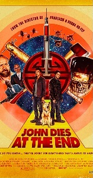

About David Wong
David Wong is the pen name of Jason Pargin, the executive editor of
Cracked. Jason has written four books that are
currently availabile on
Amazon.
The John Dies at the End series has become a New York Times bestselling series!
The first installment of the series has since been adapted into a movie, available
to stream now on Hulu.

Wong was born in Lawrenceville, Illinois. He and fellow Internet writer John Cheese (real name Mack Leighty) went to high school together and met during an art class they shared. Wong then attended the Southern Illinois University (SIU) radio-television program, graduating in 1997. While at SIU, he was part of a TV show on Alt.news cable TV called Consumer Advocate. A number of episodes were produced. He lived in Marion, Illinois until 2014, when he moved to Nashville.
If you enjoy cosmic dark comedies please give this book a try!